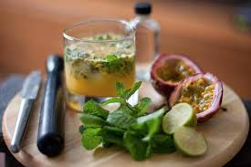
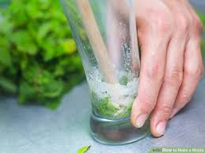

- Bacardi Superior Rum
- 4 Lime Wedges
- 12 fresh Mint Leaves
- 2 tsp extra fine sugar
- 1 Part Soda Water/ Club Soda
- Spring of fresh mint

- Step 1: Take the lime wedges and squeeze them in the glass.
Gently press together the limes & sugar
- Step 2: Bruise the mint leaves by clapping them between your
palms, rub them on the rim of the glass and drop them in.
- Step 3: Next, half fill the glass with crushed ice, add the
BACARDÍ Superiorn rum & stir.
- Step 4: Top with crushed ice, a sprig of mint and club soda.
- Mix it all together and enjoy!